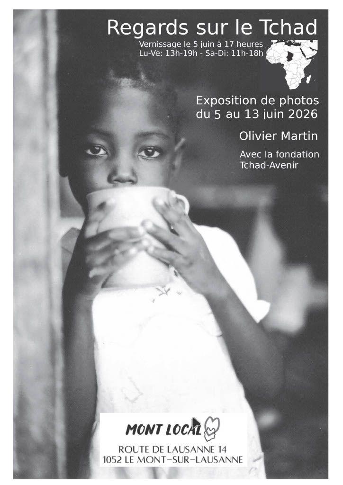

Exposition
5–13
juin 2026
Regards sur le Tchad — Exposition photographique
Olivier Martin présente ses photographies du Tchad dans le cadre d'une exposition à Le Mont-sur-Lausanne. Une plongée dans la réalité humaine et paysagère du pays, en lien direct avec l'engagement de Tchad-Avenir.
Vernissage : 5 juin 2026 à 17h
Horaires : Lu–Ve 13h–19h / Sa–Di 11h–18h
Lieu : Mont Local, Route de Lausanne 14, 1052 Le Mont-sur-Lausanne